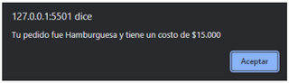

Crear un programa que le permita al usuario ingresar un número mediante una ventana utilizando prompt donde mostrará un menú de 1 a 4 de los cuales puede seleccionar.
- Si el usuario ingresa un número que está en el menú, el programa le devolverá el nombre de la comida seleccionada y el precio.
- Si el usuario ingresa un número que no está en el menú o cualquier otro valor, el programa simplemente devolverá un mensaje diciendo que el número seleccionado no está en el menú.
- Si el usuario presiona sobre el botón cancelar el programa le mostrará un mensaje que diga “Gracias por su visita”
Ejemplo de ventana de menú
Ejemplo de mensaje cuando el usuario ingresa un número que no está en el menú o cualquier otro valor.
Ejemplo de un mensaje cuando el usuario presiona el botón cancelar.
prompt te permite pedir a un usuario que ingrese un valor, el cual podrás guardar en una variable para luego usarlo más adelante. Ten en cuenta que prompt guarda el valor que el usuario ingresa como un string.
alert te permite mostrar un mensaje al usuario.
En javascript puedes agregar saltos de línea en un string mediante \n
Nota
- Para esta asignación se debe subir el proyecto a la plataforma en un archivo .rar.
Fecha de Entrega: 30 de noviembre 2023